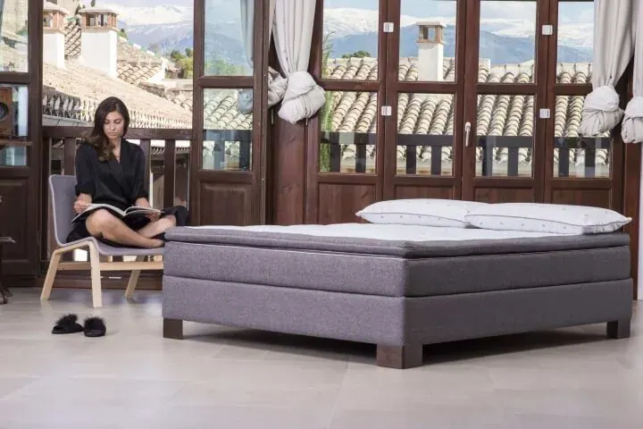
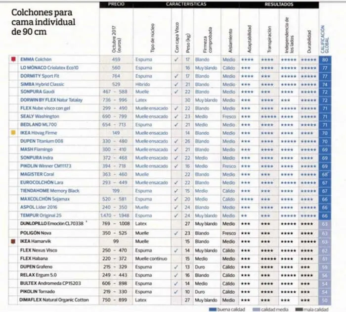
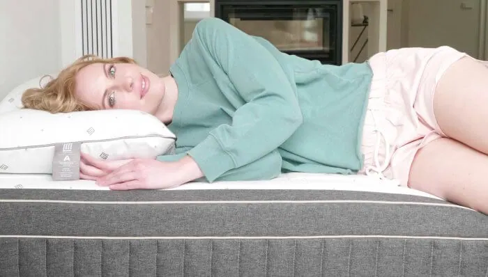

Los mejores colchones de 2018 según la OCU: Colchón LoMonaco CRIOLÁTEX® ECO10®

La opinión sobre los mejores colchones de Lo Monaco es un barómetro de la calidad del producto. Sabemos que nuestros colchones se encuentran entre los mejores del mercado, porque nuestros clientes así lo deciden, pero además existen otros indicadores que nos hacen saber que el trabajo va por el mejor de los caminos.
¿Cuáles son los mejores colchones del mercado?
Sería lo mismo preguntarnos: ¿cuáles son los mejores colchones para dormir? Podríamos decir que el análisis más prestigioso, pormenorizado y veraz, es el ranking anual “Compra Maestra”, que la Organización de Consumidores y Usuarios (la archiconocida OCU) realiza para ayudar a elegir los mejores productos del mercado. El ranking mejor colchón 2017 de la OCU, se renueva para este 2018 con nuevas incorporaciones, como es el caso de nuestro colchón Criolátex® ECO10®, un desarrollo propio de Lo Monaco, fabricado para dar todo lo mejor que un colchón de látex aporta al descanso.
De este modo, anualmente un equipo de expertos, analizan prácticamente todos los colchones para comprar en España (ya sean colchones para comprar online o en establecimientos físicos) y ofrece un ranking a los consumidores, en los que se ordena los colchones con un puntaje de 0 a 100, situándose en los puestos más altos de la clasificación, los mejores colchones del mercado.
¿Cómo concluye la OCU cuáles son los mejores colchones? El análisis
¿Son los colchones buenos fáciles de localizar? El estudio que realiza por la OCU tiene particularidades que le confieren credibilidad, como por ejemplo, la de ser un organismo completamente independiente, con esto nos referimos a que los resultados de sus análisis no tienen intención publicitaria de ningún tipo, ni las marcas participan de ningún modo. Así, compran y analizan, fieles a su objetivo de asesorar imparcialmente al consumidor final y ofrecerles el mejor colchón calidad-precio.
Además, por último cabe destacar que se trata de un análisis exhaustivo, ya que pasan examen prácticamente todos los colchones que existen en el mercado español.
¿En qué consiste el análisis que determina qué es un buen colchón?
La organización lo explica detalladamente:
-Eligen cuidadosamente una muestra de durmientes auténticos, con una espalda sana.
-Se llevan los colchones a un laboratorio especializado, donde se mide cómo se comporta el material cuando el durmiente ejerce presión. También se miden otros aspectos como la disipación de la temperatura o la reacción del colchón cuando entra en contacto con el fuego.
–Ningún detalle se le escapa a la OCU, examinando también el interior de los colchones, para ver el comportamiento de los materiales durante el análisis.
El colchón LoMonaco Criolátex ECO10 entre los mejores colchones de 2018
En el ranking para este 2018, el colchón LoMonaco CRIOLATEX® ECO10®, obtiene una puntuación de 77 sobre 100, lo que lo hace el segundo mejor colchón de 2018, después de analizarse casi 50 productos.

Las claves de la excelencia del colchón Lo Monaco CRIOLATEX® ECO10® para la OCU, radican en una adaptabilidad más que notable (3 puntos sobre 5), alta independencia de lechos para cada durmiente en el caso de los colchones de matrimonio y una gran capacidad de absorción y disipación de la humedad (fundamental para el control de la temperatura mientras se duerme).
Por encima de todo, en el análisis se destaca la durabilidad del producto, obteniendo la máxima puntuación (cinco puntos, en una escala del 1 al 5). Esto significa que el producto se somete en el laboratorio, a una prueba con un rodillo de 140 kg. que pasa por la superficie del colchón 60.000 veces, esto equivale a simular el uso durante 8 ó 10 años. Cabe destacar como también se verifica que tanto la elasticidad como la altura de la superficie, siga intacta tras el envejecimiento forzado.
La mejor opción: relación calidad-precio garantizada
Un colchón Lo Monaco CRIOLATEX® ECO10® es invertir en confort y relax, ten seguro que tus sueños están asegurados durante los próximos años. Este colchón supuso una revolución en cuanto a lo que la manera de fabricar colchones de látex se refería hasta el momento, por la revolucionaria tecnología de fabricación en frío, supone un consumo de energía mínimo y en consecuencia, un bajo impacto para el medio ambiente.
Además de lo revolucionario del material, con el Criolátex® se seguía disfrutando de lo mejor del látex: una adaptabilidad perfecta, una firmeza media real y un soporte progresivo punto a punto cuando estamos durmiendo. Por otro lado, este colchón de látex evolucionado, proporcionaba una temperatura, transpirabilidad y suavidad únicas. El colchón ECO10®, llevaba a tu cama tecnología de vanguardia y materiales naturales para un descanso sin igual.
Colchón Criolátex® Natura de Lo Monaco, la evolución de ECO10®
Dando un paso más, el colchón Criolatex® Natura incluye también lo mejor de los colchones de viscoelástica, gracias a la confortabilidad que aporta el mousse viscoelástico, que en combinación con el látex frío hace de Lo Monaco la mejor marca de colchones que puedes elegir para dormir bien. En definitiva, hemos logrado sacar lo mejor de cada material, para condensarlo en un solo producto.
Temperatura perfecta
Para dormir bien, se necesita un colchón que impida la acumulación térmica. El colchón Criolátex® Natura de Lo Monaco, está especialmente preparado para permitir que el durmiente note siempre la temperatura perfecta. Se trata de su capacidad reguladora de la temperatura que permite el descanso sin ninguna acumulación térmica, uno de los tres requisitos para descansar toda la noche (aparte de tener la conciencia muy tranquila).
Firmeza media garantizada
Ir a dormir en un colchón que asegure la firmeza media perfecta, es otro requisito imprescindible (aunque no suficiente). La gama de colchones Criolatex® Natura, garantiza una firmeza media real y un soporte progresivo punto a punto, respetando la anatomía de cada durmiente ¡Te pongas como te pongas, Criolatex® Natura es tu colchón!
Máximo confort
Completando el triángulo de beneficios que se necesitan para un buen descanso, tendríamos el confort, o como la presión que ejerce nuestro cuerpo por la superficie de descanso, se reparte equitativamente. Un colchón confortable, se adapta a nuestras curvas naturales, sin crear puntos de presión.
